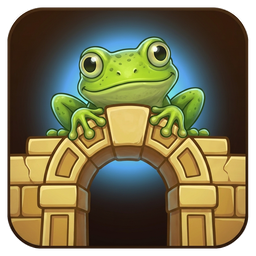
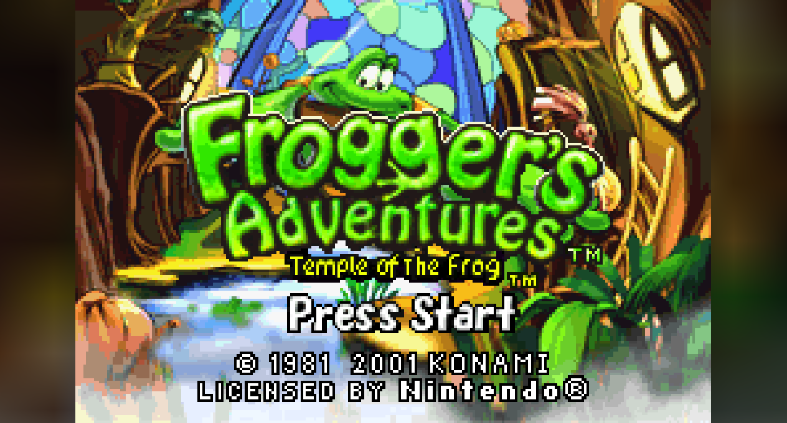
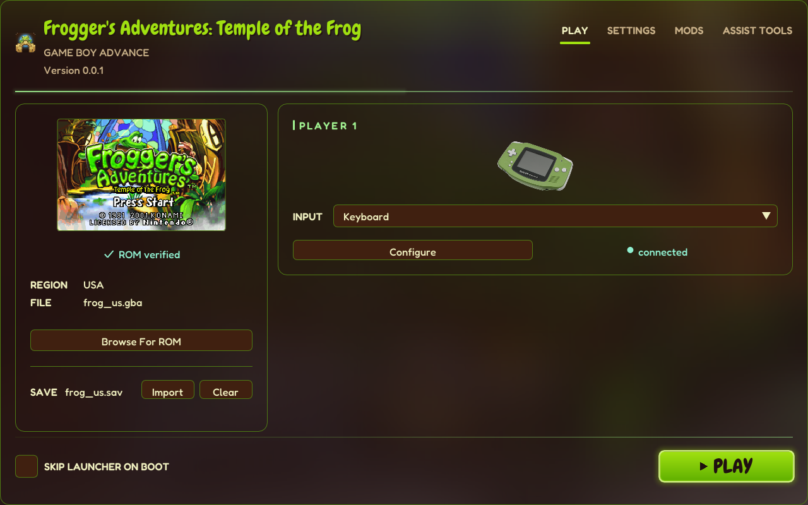
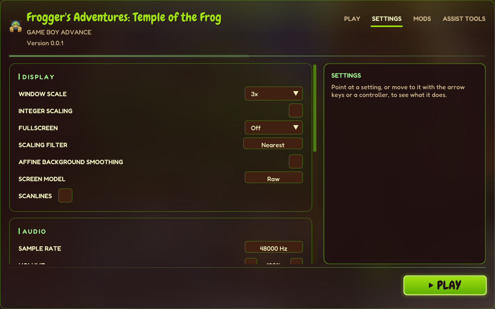
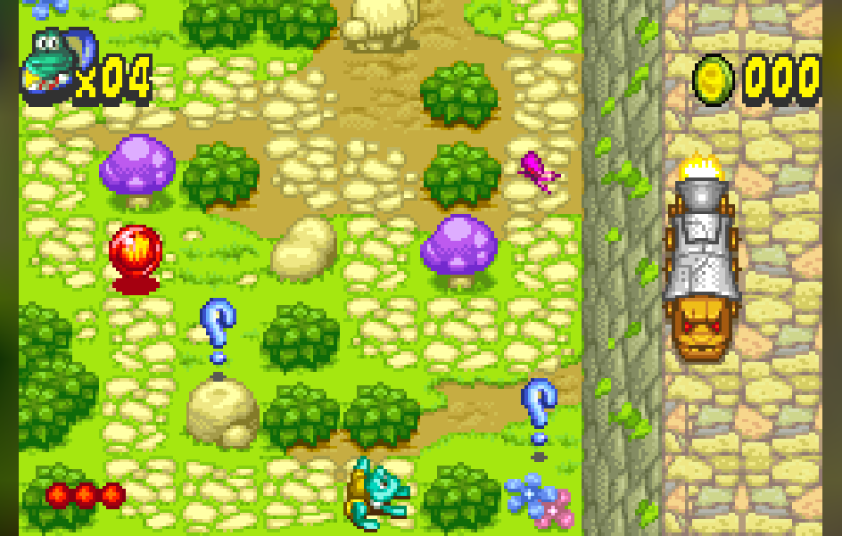
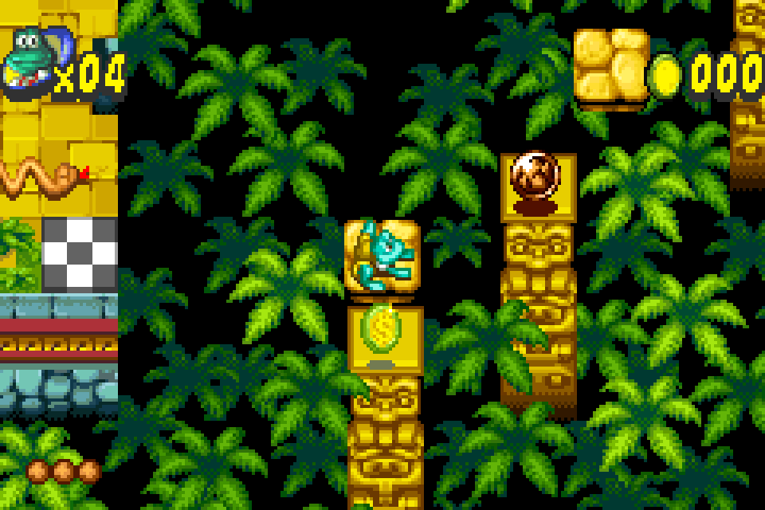
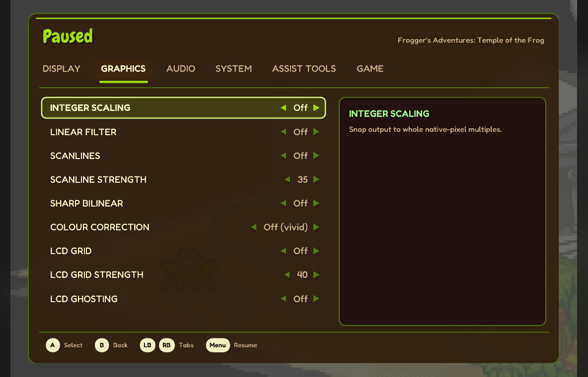
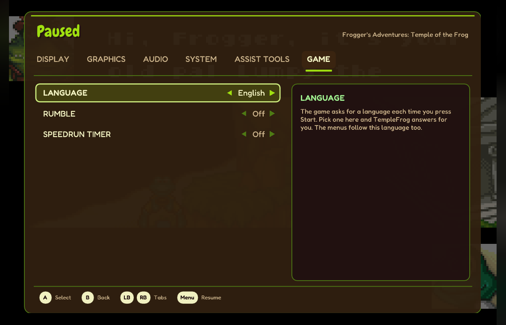
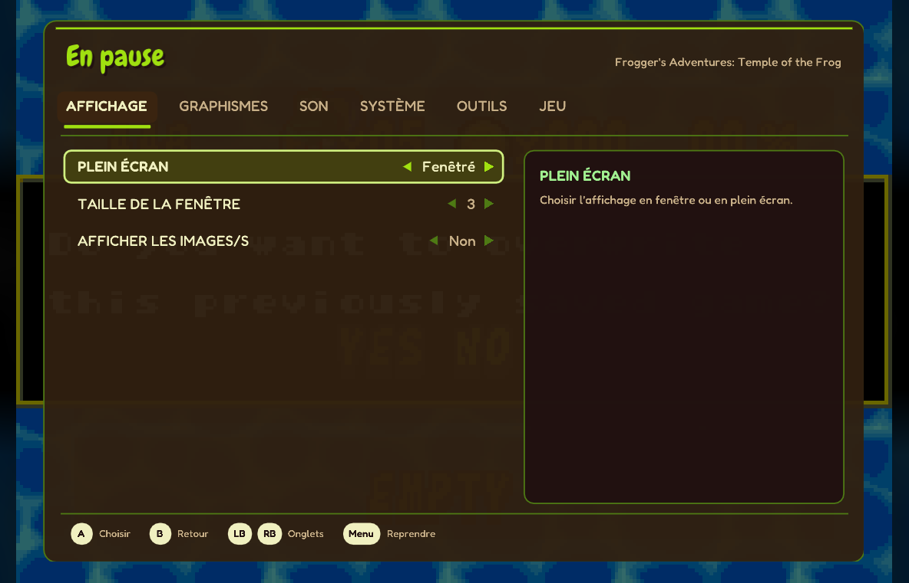
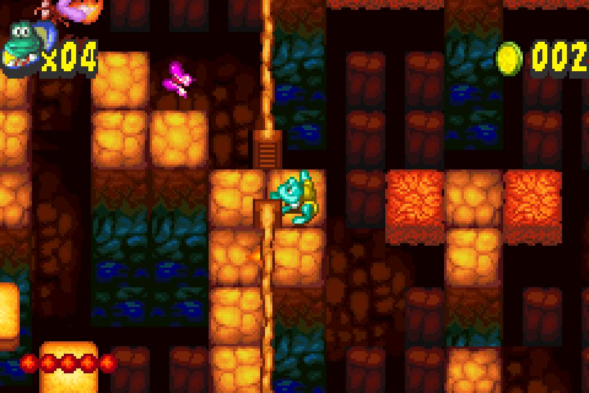

Temple of the Frog, on your PC
TempleFrog turns the Game Boy Advance classic into a native program for Windows, Linux and the Steam Deck, recompiled ahead of time from your own copy of the game. Then it adds what a PC port should have: a launcher, cleaner high-precision sound, sharp filters, save states, rewind, fast boot, controller support with matching button prompts, and the whole interface in the game's five languages.
The Linux AppImage needs glibc 2.27 or newer: Ubuntu 20.04, Debian 10, Fedora 29, any SteamOS 3 and later. An Android build is planned. You can build it yourself from the source.
Prefer a launcher? TempleFrog works with RecompLauncher on Windows, Linux and the Steam Deck: pick your ROM on its setup screen and it checks it, starts the game and shows TempleFrog's settings on the game's page. It's also in the Quiver Launcher catalog.

What it does
The real game
Recompiled to native code ahead of time, running the real GBA BIOS from your own dump. No emulator core plays the game.
Enhanced audio
A new mixer for the game's sound engine: floating point at 48 kHz, clean resampling, smooth notes, cleaned-up samples and a limiter. No hiss or crunch.
Sharp or smooth
Integer scaling, sharp bilinear, HQ2x/3x/4x, scanlines, LCD grid and ghosting, and GBA, GBA SP or vivid colours.
Blurred side bars
Wide or tall windows show a soft glow of the game around the picture. Plain black is one switch away.
Fast boot
Straight past the BIOS and start-up logos to the title in about a second and a half.
Save states and rewind
Save and load states, rewind 30 seconds, fast-forward, and pause when you switch windows.
Your controller
Keyboard or pad, remappable, with prompts that match Xbox, PlayStation or Switch buttons, and optional rumble.
Five languages
English, French, German, Spanish and Italian for the launcher and menus, and the game's own language screen answered for you.
Speedrun timer
Level time, total and last split, counted in game frames so pausing never adds time.
Private
No accounts, no telemetry, no network use at all. Saves and states live in one folder next to the program.
Screenshots








Game graphics in these screenshots come from a legally obtained copy of the game, as they do on your PC. They're © Konami and aren't part of TempleFrog.
Getting started
- Download the zip above and unzip it anywhere you can write to (not Program Files). On Linux or a Steam Deck, download the AppImage and make it executable (
chmod +x, or Properties → Permissions). - Add your files: your ROM as
roms\frog_us.gbaand your BIOS asbios\gba_bios.bin, or pick them in the launcher (on Linux, always in the launcher, or in~/.local/share/TempleFrog). - Run TempleFrog.exe (or the AppImage) and press PLAY. On a Steam Deck, add the AppImage to Steam as a non-Steam game to play it in Game Mode. In game, Esc opens the menu (on a pad: click a stick, or Select + Start).
| File | Version | SHA-1 |
|---|---|---|
| ROM | Frogger's Adventures - Temple of the Frog (USA) (En,Fr,De,Es,It), AFRE | 7b4c27009198df18555e63fb5dcad223eaf09815 |
| BIOS | Game Boy Advance BIOS | 300c20df6731a33952ded8c436f7f186d25d3492 |